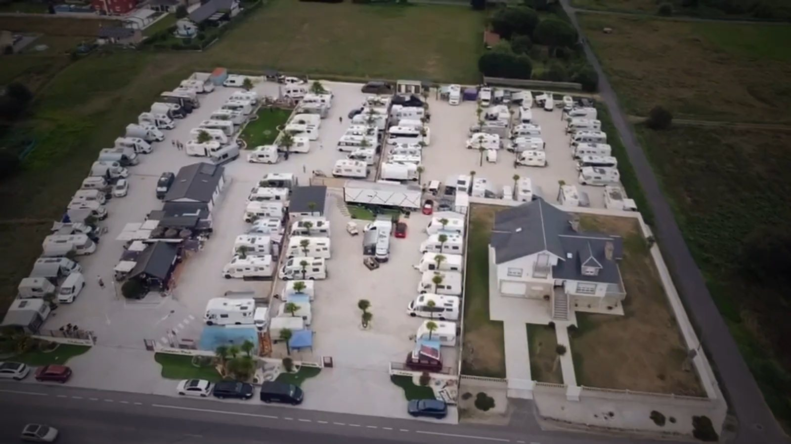
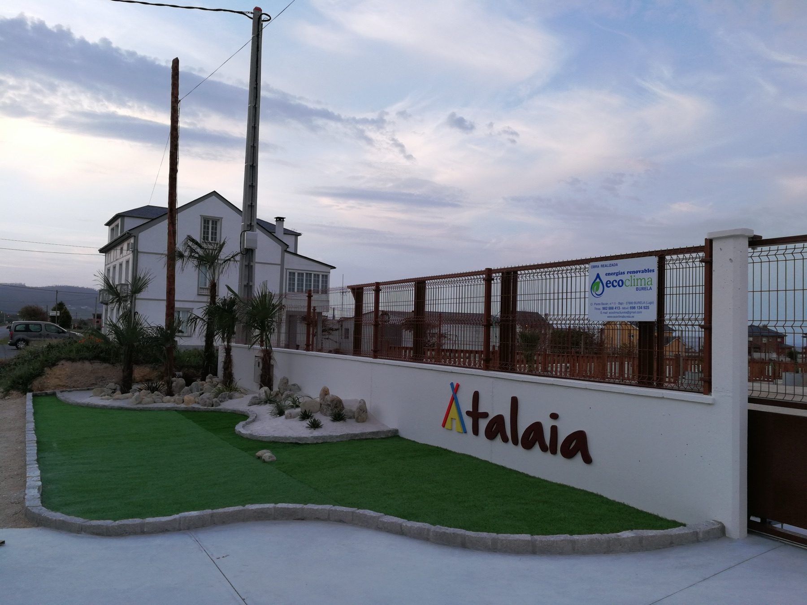
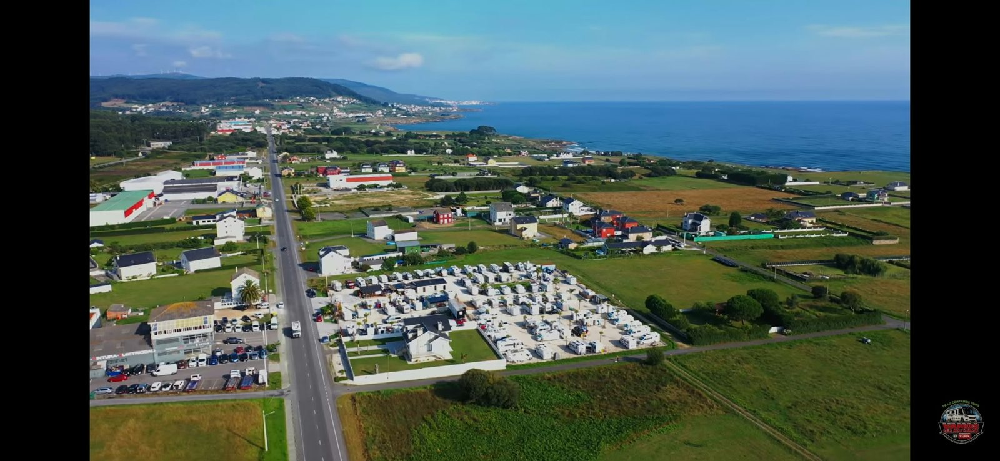
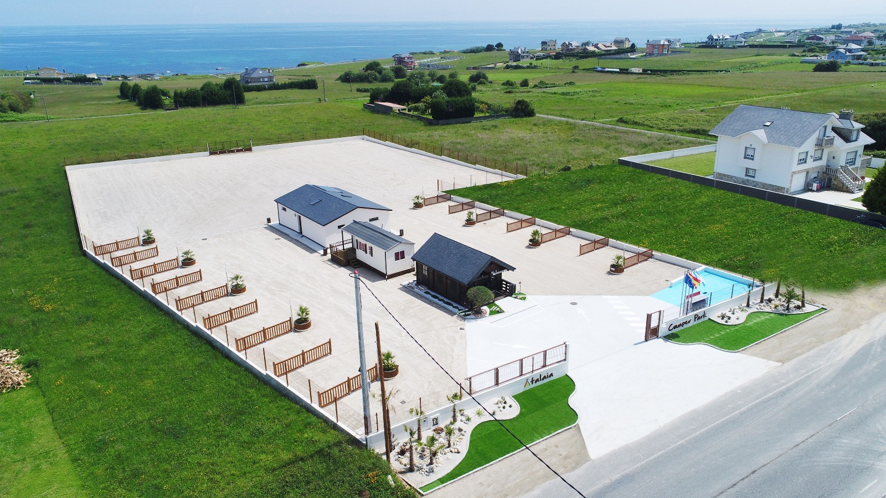
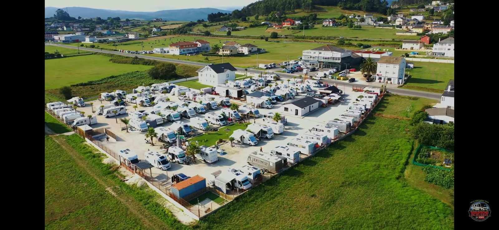

A 500 metros da praia de Llas e a un paseo da ría de Foz, Atalaia é unha área pensada por e para autocaravanistas: parcelas amplas, servizos impecables e un anfitrión que coñece a estrada tan ben coma ti.
«Atalaia» é o alto desde o que se albisca o mar.
E iso é exactamente isto: unha explanada de area de cuncha na parroquia de San Martiño de Mondoñedo, na estrada de Forxán, coas pradeiras da Mariña por diante e o Cantábrico de fondo. Aquí vense durmir co son do mar, saír andando á praia e volver pola tarde a unha caña no chiringuito da área.
Atalaia abriu en 2017 e está xestionada por Moncho, autocaravanista antes ca anfitrión. Nótase nos detalles: parcelas de verdade —non raias nun parking—, dúas zonas de baleirado e enchido, lavandería, sala con TV, zona para mascotas e un céspede chill-out con sombreiros de breixo para as tardes de verán.
A limpeza é a casa pola ventá: pregúntalle a calquera que pasase por aquí.

a entrada, ao solpor ✎…e unhas cantas cousas que non agardabas ↓
Toma propia nas 77 parcelas da área.
Auga potable, augas grises e negras e WC químico. Dúas zonas de servizo.
Baños e duchas impecables. Ducha quente: 1 €/6 min.
Conexión de balde para planear a seguinte etapa… ou non planeala.
Almorzos, cañas e tapas sen saír da área, con terraza e zona chill-out.
Lavadora e secadora (4 € cada unha) e ferro de pasar á túa disposición.
Pídeas en recepción e baixa pedaleando ao paseo da praia.
Espazo propio para que tamén elas estiren as patas. Mascota incluída na tarifa.
Zona de barbacoas para cear ao aire libre as noites de verán.
Encarga pan e bolería pola noite e recólleos acabados de facer.
Botellas de gas e pequenos recambios sen moverte da área.
Área valada e coidada, con sala de estar, TV e máquinas de lambetadas.



unha noite = parcela + 2 adultos + 1 neno + mascota + augas
| Ducha de auga quente (6 min) | 1 € |
| Lavadora | 4 € |
| Secadora | 4 € |
| Só cambio de augas, de paso | 5 € |
Tarifas orientativas. Confirma prezos e datas de tempada ao chegar ou por teléfono.
Area e rochas a un paseo. Ideal para ir a pé ou en bici pola senda costeira.
O porto, as terrazas e a praia urbana con bandeira azul da vila mariñeira.
A basílica considerada a catedral máis antiga de España, na nosa propia parroquia.
Os arcos de pedra máis famosos do Cantábrico. No verán, reserva o teu pase con antelación.
Paseos á beira do mar, marisqueo, aves e un dos miradoiros máis fermosos da Mariña, todo a tiro de bici desde a área.
Foz é etapa natural da ruta costeira cara a Santiago: moitos peregrinos e cicloturistas fan noite en Atalaia.
«Un área espectacular, la mejor que he visitado. Con un pequeño bar, servicios limpios, todo cuidado.»
«Se nota cuando el responsable es autocaravanista. Moncho es un pedazo de profesional y su área camper no he visto ninguna igual.»
«Moncho es una persona que sabe lo que tiene entre manos y nos hace estar más a gusto que en casa.»
Opinións reais publicadas en park4night. Grazas por cada unha delas.
así non tes que agardar a que collamos o teléfono
É o xeito máis rápido de ter resposta. Escolle a túa consulta e chégache a mensaxe xa medio escrita.
Desde a autovía do Cantábrico A-8, saída 524, segue cara a Foz pola N-634 e despois a N-642 dirección Forxán. Verás o rótulo de Atalaia a pé de estrada.